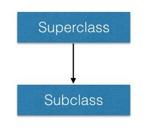

class __Name__(__args__) {
__computation__
val __field__ = ...
var __field__ = ...
def __method__(__args__...): __Type__ = {
...
}
}
! A class definition can be parametersized by arguments, and it can contain computation and declaration of the content of the class, including members and methods.
class Student(_name:String, _year:Int) {
var grade = 0.0f
val name = _name
var year = _year
def report():String = s"${name} in ${year} has grade ${grade}"
}
Very often, the arguments are used to initialize members of the class. Scala allows you to declare the members as part of the arguments.
class Student(val name:String, var year:Int) {
var grade = 0.0f
def report() = s"${name} in ${year} has grade ${grade}"
}
! We can omit the return value of report thanks to type inference.
Scala supports multiple constructors in addition to the primary constructor.
class __Name__(...) {
def this(__args__...) {
__code__
}
...
}
import java.util.Calendar
class Student(val name:String, var year:Int) {
def this(name:String) {
this(name, Calendar.getInstance().get(Calendar.YEAR))
}
var grade = 0.0f
def report() = s"${name} in ${year} has grade ${grade}"
}
class __Subclass__(__args__...) extends __Superclass__(__args__...) {
...
}
! 
class Student(val name:String, var year:Int) {
def this(name:String) {
this(name, Calendar.getInstance().get(Calendar.YEAR))
}
var grade = 0.0f
def report() = s"${name} in ${year} has grade ${grade}"
}
We can extend the hierarchy with a subclass.
class GradStudent(
name: String,
year: Int,
val degree: String,
var office:String)
extends Student(name, year) {
override def report() = {
super.report + "\n" +
"... studying towards ${degree}"
}
}
All objects of GradStudent can be used as Student
Dynamic dispatching
The exact method to be invoked is determined by the object (at runtime) that the symbol is bound to, not by the type of the symbol.
Try this out:
val jack: Student = new GradStudent("Jack", 2016, "MSc", "UA2001")
println(jack.report)
! Make sure you understand the output. Note that Scala is performing dynamic dispatching.
abstract class __Name__(...) {
val __field__: __T__ // abstract fields don't have to be initialized.
def __method__(...): __T__ // methods without body are abstract
}
abstract class Person {
val name: String
def report(): String
}
class Student(val name: String, var year:Int)
extends Person {
...
}
Abstract class can have a primary constructor.
abstract class Person(val name:String) {
def report(): String
}
class Student(name: String, var year:Int)
extends Person(name) {
...
}
Each class can only extend at most one class.
This causes problems in modeling real-life scenarios:
Anyone employed by the university will need to have an office, and a method to help students.
How do we model this?
abstract class Staff {
var office: String
def help(Student s)
}
We would like to do the following:
class TA(...) extends GradStudent(...), Staff {
override def help(Student s) = {
...
}
}
But this is not allowed by Java nor Scala.
! Can you use Java’s interface instead? (No)
Traits are purely passive description of a blueprint (classes).
They generalize interfaces:
trait __Name__ {
__member_definition__
def __method__(...): T // abstract method
def __method__(...) = { // method with default implementation
...
}
}
trait Staff {
var office: String
def help(Student s)
}
All traits can be used as an abstract class.
class Professor(var office:String) extends Staff {
override def help(Student s) {
println("""My office hour is:
| Tuesday 2-3pm, and my email is
| Albert.Einstein@gmail.com
| Please bring your questions with you.""")
}
}
But multiple traits can be applied using the with construct.
Class definition with traits
class TA(office:String, name: String, year: Int, degree: String)
extends GradStudent(name, year, degree, office)
with Staff {
def help(Student s) {
println("Hi ${s.name}, what's your problem?")
}
}
Object construction with traits
var jack = new GradStudent("jack", 2016, "MSc", "UA2001") with Staff
GradStudent has an office (as required by Staff),help(Student) but that’s okay because Staff
provides a default implementation.jack.help(jack)
> "Hey"
Recall that all Person can generate a report by the method def
report():String.
What if we want to apply special formats to their reports?
For example:
- convert the report to uppercase
- apply spellchecking
- apply richtext formatting
We can use traits.
def report:String method that relies on the
implementation of its superclass.Person.trait Uppercase extends Person {
__abstract__ __override__ def report: String = {
val s = super.report
s.toUpperCase
}
}
! The abstract informs Scala that the eventual implementation belongs
to the object of the class that has this trait. The override method states
that it’s modifying the underlying method.
trait Richformat extends Person {
abstract override def report: String = {
val s = super.report
"<html><i><b>" + s + "</b></i></html>"
}
}
Now we can do some really cool mixins.
! The ability to inject traits to a class is called mixins.
var jack = new GradStudent("jack", 2016, "MSc", "UA2001")
with Staff
with Uppercase
with Richformat
Compare this with:
var jack = new GradStudent("jack", 2016, "MSc", "UA2001")
with Staff
with Richformat
with Uppercase
Traits are applied one after another in a sequential fashion - think of them as layers of an onion.
This is called linearization of trait mixins.
class MyList[T] {
...
}
def selectOne[T](list: Array[T]):T = ...
[U,
V, W].Consider the following:
def max[T](list: Array[T]): T = {
var x = list[0]
for(i <- 1 until list.length) {
val y = list[i]
if(x < y) x = y
}
return x
}
What is x < y?
It’s a syntactic short-hand for x.<(y).
This means that T must have the method def <(T):Boolean.
Scala has a trait:
scala.math.Ordered[A]
! The Ordered trait provides the implementation for <. But it
requires the implementation of def compare(A):Int
def max[T <: Ordered[T]](list: Array[T]): T = {
...
}
The syntax [T <: U] states that T must be a subtype of U.
In this case, we want T to be a type with the trait of Ordered[T].
If Apple <: Fruit, should Box[Apple] <: Box[Fruit]?
The answer depends on the definition of Box[T].
A type parameter can have an optional variance.
Default is no variance.
Covariance: [+T] means that the subtype relation is preserved.
Contravariance: [-T] means that the subtype relation is reversed.
The variance is to provide maximal class reusability while preserving type correctness.
Consider the implementation:
class Box[T](val item: T)
Is it safe to assume Box[Apple] <: Box[Fruit]?
Suppose yes, we allow Box[Apple] <: Box[Fruit].
val box: Box[Fruit] = new Box[Apple](🍎) ✓
box.item : Fruit = 🍎:Apple ✓
So, we can safely declare the type parameter of Box covariant.
class Box[+T](val item: T)
! The reason we can do so is that Box is read-only.
Now, consider:
class Box[T](var item: T)
! The only difference is that item is now mutable.
Can we still assume Box[Apple] <: Box[Fruit]?
Assume yes. This means that we have:
Box[Apple] <: Box[Fruit] and Box[Banana] <: Box[Fruit]
Let’s see what can happen:
val box1: Box[Apple] = new Box[Apple](🍎) ✓
val box2: Box[Fruit] = box1 ✓ // by assumption
box2.item = 🍌 ✓
// box1.item:Apple == 🍌:Banana ✘ type error
Now, consider:
class Box[T](private var item: T) {
def set(x:T) = this.item = x
}
! Box is write-only.
You can check that it is safe to declare the write-only Box with a
contravariant type parameter.
class Box[-T](private var item: T) {
def set(x:T) = this.item = x
}
Can you justify why functions have the following trait?
trait Function1[-T, +R]
The input is contravariant, and
the output is covariant.
This means:
Fruit $\to$ Cat is a subtype of Apple $\to$ Animal
! Can you verify it?